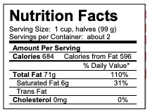
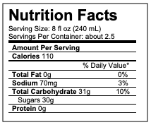

Use proportion equations, dimensional analysis, diagrams, or any other strategies or combinations to solve the following problems. There are many valid methods here. Be clear about your process; especially if the answer seems simple.
34.
A crepe recipe calls for 2 eggs, 1 cup of flour, and 1 cup of milk. How much flour would you need if you use 5 eggs?
35.
An 8ft length of 4 inch wide crown molding costs $14. How much will it cost to buy 40ft of crown molding?
36.
Four 3-megawatt wind turbines can supply enough electricity to power 3000 homes. How many turbines would be required to power 55,000 homes?
37.
A highway had a landslide, where 3,000 cubic yards of material fell on the road, requiring 200 dump truck loads to clear. On another highway, a slide left 40,000 cubic yards on the road. How many dump truck loads would be needed to clear this slide?
38.
A wire costs $2 per meter. How much will 3 kilometers of wire cost?
39.
Sugar contains 15 calories per teaspoon. How many calories are in 1 cup of sugar?
40.
A car is driving at 100 kilometers per hour. How far does it travel in 2 seconds?
41.
A chain weighs 10 pounds per foot. How many ounces will 4 inches weigh?
42.
The store is selling lemons at 2 for $1 Each yields about 2 tablespoons of juice. How much will it cost to buy enough lemons to make a 9-inch lemon pie requiring \(\frac{1}{2}\) cup of lemon juice?
43.
You read online that a 15ft×20ft brick patio would cost about $2,275 to have professionally installed. Estimate the cost of having a 18ft×22ft brick patio installed.
44.
The Deepwater Horizon oil spill resulted in 4.9 million barrels of oil spilling into the Gulf of Mexico. Each barrel of oil can be processed into about 19 gallons of gasoline. How many cars could this have fueled for a year? Assume an average car gets 20 miles to the gallon, and drives about 12,000 miles in a year.
45.
During the landing of the Mars Science Laboratory Curiosity, it was reported that the signal from the rover would take 14 minutes to reach earth. Radio signals travel at the speed of light, about 186,000 miles per second. How far was Mars from Earth when Curiosity landed?
46.
It is estimated that a driver takes, on average, 1.5 seconds from seeing an obstacle to reacting by applying the brake or swerving. How far will a car traveling at 60 miles per hour travel (in feet) before the driver reacts to an obstacle?
47.
Sound travels about 750 miles per hour. If you stand in a parking lot near a building and sound a horn, you will hear an echo. Suppose it takes about \(\frac{1}{2}\) a second to hear the echo. How far away is the building?
48.
The grocery store has bulk pecans on sale, which is great since you’re planning on making 10 pecan pies for a wedding. Your recipe calls for \(1\frac{3}{4}\) cups pecans per pie. However, in the bulk section there’s only a scale available, not a measuring cup. You run over to the baking aisle and find a bag of pecans, and look at the nutrition label to gather some info. How many pounds of pecans should you buy?

A nutrition label for a package of pecans. Serving Size: 1 cup, halves (99 g) Servings per Container: about 2
49.
Soda is often sold in 20 ounce bottles. The nutrition label for one of these bottles is shown to the right. A packet of sugar (the kind they have at restaurants for your coffee or tea) typically contain 4 grams of sugar in the U.S. Drinking a 20oz soda is equivalent to eating how many packets of sugar?

A nutrition label for a a soda. The serving size is 8 fl oz. The Servings per Container are about 2.5. Under the heading “Amount Per Serving”, the Calories are 110, Total Fat is 0g, Sodium is 70mg, Total Carbohydrate is 31g, Sugars 30g, and Protein 0g.
50.
The flash of lightning travels at the speed of light, which is about 186,000 miles per second. The sound of lightning (thunder) travels at the speed of sound, which is about 750 miles per hour. If you see a flash of lightning, then hear the thunder 4 seconds later, how far away is the lightning?
51.
Generalize your work from the problem above. If you count \(n\) seconds between seeing a flash of lightning and hearing the associated thunder, how far away is the storm? Your answer should have the variable \(n\) in it.